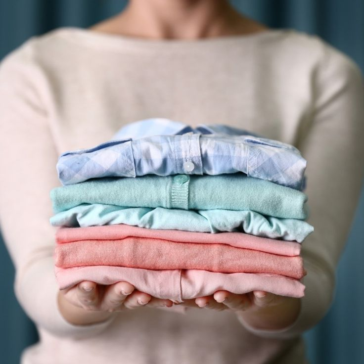

Usar ropa limpia no solo mejora tu apariencia, sino que también es esencial para mantener la higiene personal y prevenir infecciones y enfermedades de la piel.
Beneficios de Usar Ropa Limpia
- Prevención de infecciones: La ropa limpia previene la acumulación de sudor, bacterias y hongos en la piel, reduciendo el riesgo de irritaciones y enfermedades.
- Comodidad: La ropa limpia es más cómoda y te hace sentir más fresco durante el día.
- Mejora la autoestima: Usar ropa limpia puede mejorar tu confianza y te hace sentir más seguro/a.
Consejos para Mantener la Ropa Limpia
- Lava la ropa después de cada uso, especialmente si has sudado mucho o si la ropa está sucia.
- Usa detergentes suaves que no irriten la piel.
- Guarda la ropa en un lugar limpio y seco para evitar la humedad que puede promover el crecimiento de bacterias.
